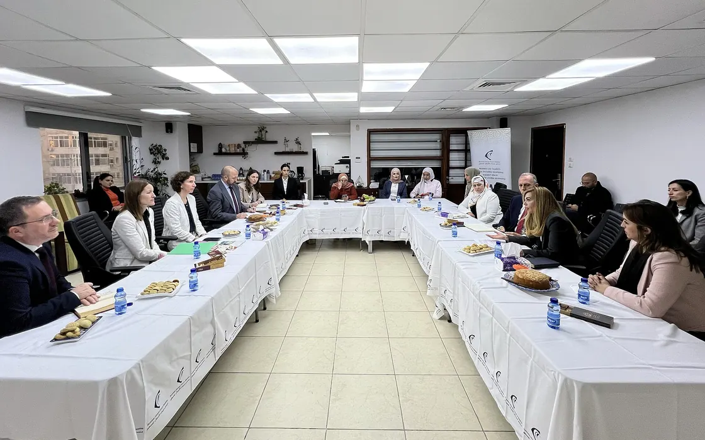

AnalysisWomen
Palestinian Women's Day in numbers: what official statistics say about 2.75 million women and girls
For Women's Day on 26 October, the statistics bureau reported that women head about a quarter of Gaza's households and 28,560 are widowed.

2.75 million. That is the number of women and girls in Palestine at the end of 2025, about 49 per cent of the population, according to figures released for Palestinian Women's Day on 26 October by the Palestinian Central Bureau of Statistics and the Ministry of Women's Affairs. Of these, 1.69 million live in the West Bank and 1.06 million in Gaza. The joint release sets out what three years of war have done to their lives.
12,500. More than this many women have been killed in Gaza since October 2023, among 74,382 deaths recorded by the Ministry of Health up to 12 October 2026, the release says. More than 9,000 of them were mothers, and 42 were journalists. Women account for about 14 per cent of the 175,416 people recorded as injured. In the West Bank, 28 women are among 1,216 Palestinians killed in the same period.
28,560. That many women in Gaza have been widowed by the war. The share of households headed by a woman rose from 12 per cent before the war to about 18 per cent by October 2025. UN Women data for 2026, cited in the release, put the number of female-headed households at about 86,290, nearly a quarter of all households in Gaza once women whose husbands are missing, detained or severely injured are included.
50,000. An estimated 50,000 women in Gaza are pregnant, with up to 180 births a day, while about 94 per cent of health facilities have been damaged or destroyed. In the first half of 2026, the release says, more than 3,950 pregnancy losses were recorded, 57.1 per cent of pregnant women were anaemic and 49.2 per cent of births were by caesarean section. About 24,600 pregnant and breastfeeding women are acutely malnourished.
5.9. The death rate among women of reproductive age in Gaza reached 5.9 per 1,000 in 2025, against 0.7 per 1,000 in 2022. The figure comes from the same release and is the starkest single measure in it: an eightfold increase in three years among women aged roughly 15 to 49, which the bureau attributes to the collapse of health and living conditions.
87. That was the number of women in Israeli prisons on 12 October, 21 of them held in administrative detention without charge, out of about 9,300 Palestinian detainees. Prisoners' organisations count 800 women among more than 26,000 arrests in the West Bank since October 2023. By 10 November the Palestinian detainees' commission put the number of women held at 90, three of them minors.
2,400. In the West Bank, the release says, demolitions and confiscations of more than 4,750 structures between October 2023 and September 2026 displaced over 8,660 people, of whom 2,400 were women and about 3,700 children. The ministry's conclusion is about policy as much as loss: it wants women involved in setting priorities for relief and reconstruction. In May it launched a national observatory to monitor violence against women.
On the record
Reported from the sources above, in our own words.